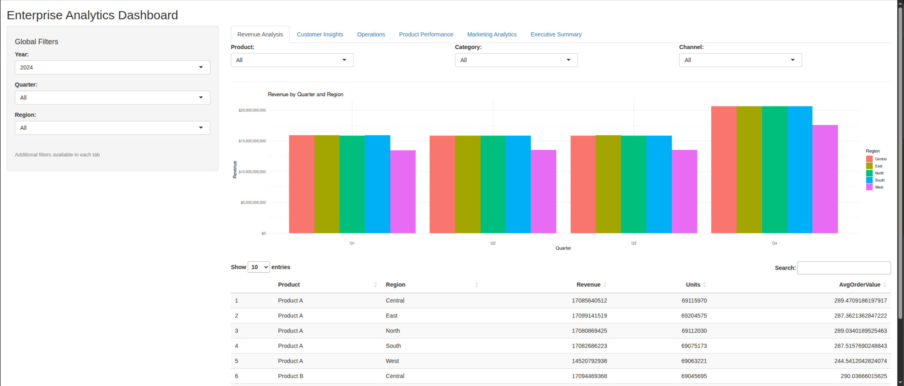
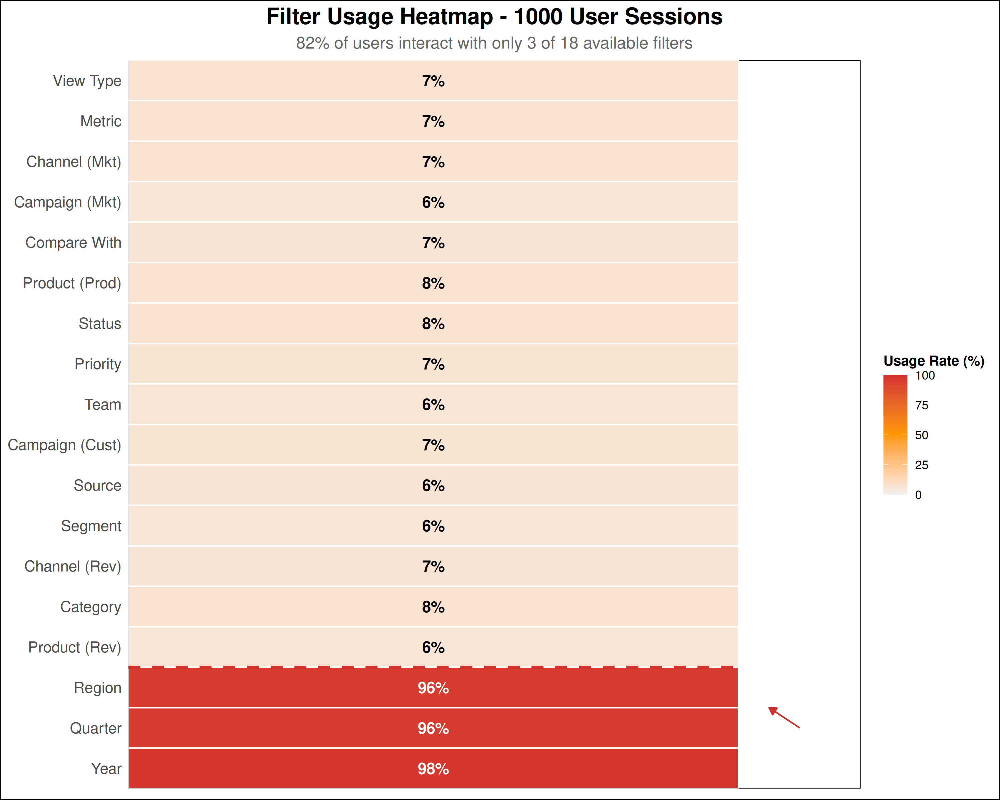
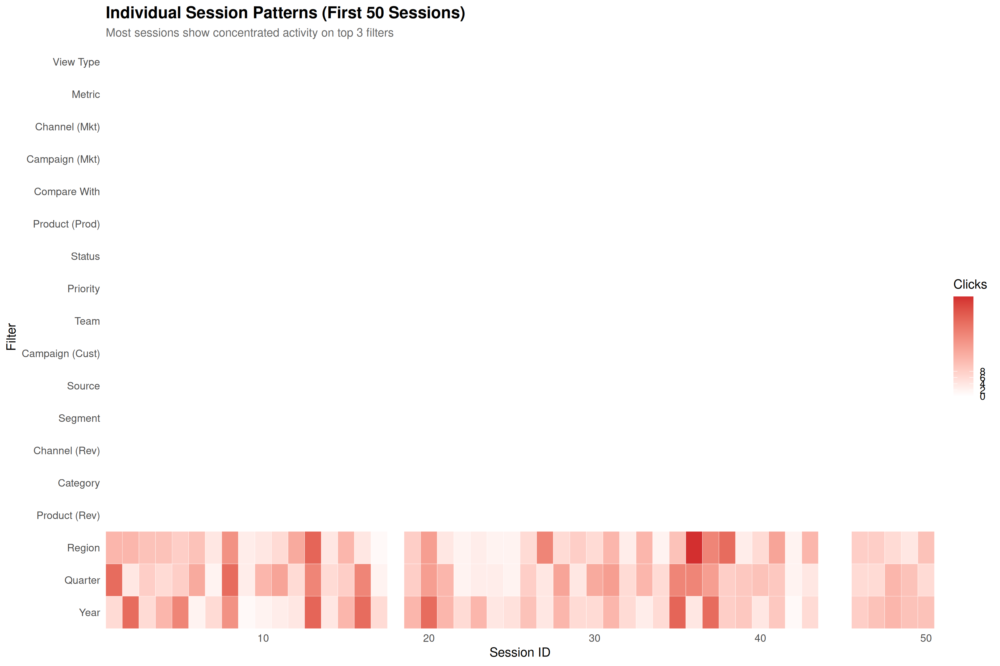
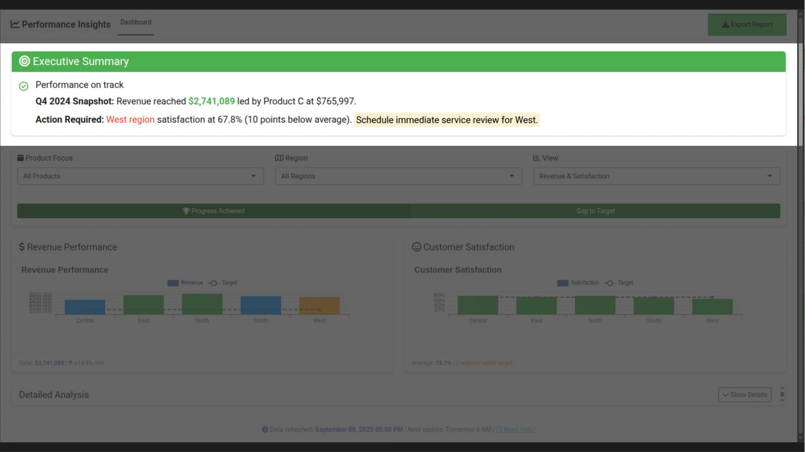

Who’s had a user ask for “just one more dropdown”?
Who’s dashboard has more selectInput() than actual insights?
Welcome to my impromptu Dashboard Support Group. You’re among friends. 😅
Why Me?
Applied Social Psychologist → Full-Stack Engineer
PhD in Applied Psychology studying how people process information
Led Shiny teams at scale, providing enterprise dashboards
Core insight: Most dashboard failures aren’t technical, they’re psychological
“As a behavioral scientist in the tech world, I’ve seen firsthand how a dash of psychology can rescue users from that feeling of ‘death by dropdown’“
Your Dashboard = A Road Trip 🚗
You wouldn’t make a long drive without:
Interpreting travel guides
Noticing any mechanical problems
Anticipating roadblocks ahead
Structuring the best route
Validating everyone arrived happy
So why build dashboards without:
Interpreting user needs
Noticing friction points
Anticipating behavior
Structuring a journey
Validating understanding
The BID Framework: Your GPS for Dashboard Design
Remember - “Interfaces Need A Smart Vision”
Behavioral Insight Design (BID): Not just UX advice - it’s behavioral science in your dev workflow
BEFORE: A Familiar Nightmare

18 filters • 6 tabs • no story • all data
User reaction: “Where do I even start?”
Result: 65% abandon rate in first 30 seconds
Every Dev’s First Dashboard
“But it has ALL the features!”
INTERPRET: Plan Your Destination 🗺️
library(dplyr)library(bidux)# Define the destination and goalsinterpret_stage <-bid_interpret(central_question ="Which markets are driving performance, and where are we lagging?",data_story =list(hook ="Q4 revenue hit record high, but satisfaction dipped",context ="After aggressive marketing across all regions",tension ="West region satisfaction fell 10 points",resolution ="Focus retention efforts on underperforming regions" ),user_personas =list(list(name ="Product Managers",goals ="Monitor weekly KPIs",pain_points ="Too many filters to find important insights",technical_level ="Moderate" ),list(name ="Executives",goals ="Review quarterly trends",pain_points ="Overwhelmed by data, need clear takeaways",technical_level ="Basic" ) ))
Stage 1 (Interpret) completed.
- Central question: Which markets are driving performance, and where are we lagg...
- Your data story has all key elements. Focus on making each component compelling and relevant.
- Your central question is appropriately scoped.
- User personas: 2 defined
summary(interpret_stage)
=== BID Framework: Interpret Stage Summary ===
Metadata:
stage_number : 1
total_stages : 5
validation_status : completed
has_central_question : Yes
story_completeness : 1
personas_count : 2
auto_generated_question : No
auto_generated_story : No
Stage Data:
stage : Interpret
central_question : Which markets are driving performance, and where are we lagging?
hook : Q4 revenue hit record high, but satisfaction dipped
context : After aggressive marketing across all regions
tension : West region satisfaction fell 10 points
resolution : Focus retention efforts on underperforming regions
personas : [{"name":["Product Managers"],"goals":["Monitor weekly KPIs"],"pain_points":[...
suggestions : Your data story has all key elements. Focus on making each component compelli...
Generated: 2025-09-08 17:20:34
Key insight: If you can’t write the question in 10 words, users won’t find answers in 100 filters
NOTICE: The Warning Lights You’re Ignoring ⚠️


Your assumption: “They need all 18 filters”
Reality: 82% use only 3 filters
Hidden cost: 4.3 minutes to first click
NOTICE: What Telemetry Reveals
# Using production telemetrytelemetry_path <-conn_telemetry_db("dashboard_telemetry.sqlite")# bid_telemetry automatically categorizes and prioritizes issues!issues <-bid_telemetry(telemetry_path)
Stage 1 (Interpret) completed.
- Central question: How can we reduce user interaction delays?
- Your data story has all key elements. Focus on making each component compelling and relevant.
- Your central question is appropriately scoped.
- No user personas defined
Auto-suggested theory: Cognitive Load Theory (confidence: 90%)
Stage 2 (Notice) completed. (40% complete)
- Problem: Users take a long time before making their first interact...
- Theory: Cognitive Load Theory (auto-suggested)
- Evidence: Median time to first input is 18 seconds, and 38% of sess...
- Theory confidence: 90%
- Next: Use bid_anticipate() for Stage 3
Stage 1 (Interpret) completed.
- Central question: How can we reduce user errors and confusion?
- Your data story has all key elements. Focus on making each component compelling and relevant.
- Your central question is appropriately scoped.
- No user personas defined
Auto-suggested theory: Cognitive Load Theory (confidence: 90%)
Stage 2 (Notice) completed. (40% complete)
- Problem: Users encounter errors when using the dashboard
- Theory: Cognitive Load Theory (auto-suggested)
- Evidence: Error 'Filter combination produced no results' occurred 3...
- Theory confidence: 90%
- Next: Use bid_anticipate() for Stage 3
Stage 1 (Interpret) completed.
- Central question: How can we reduce user errors and confusion?
- Your data story has all key elements. Focus on making each component compelling and relevant.
- Your central question is appropriately scoped.
- No user personas defined
Auto-suggested theory: Cognitive Load Theory (confidence: 90%)
Stage 2 (Notice) completed. (40% complete)
- Problem: Users encounter errors when using the dashboard
- Theory: Cognitive Load Theory (auto-suggested)
- Evidence: Error 'Incorrect time period selected' occurred 34 times ...
- Theory confidence: 90%
- Next: Use bid_anticipate() for Stage 3
Stage 1 (Interpret) completed.
- Central question: How can we reduce user errors and confusion?
- Your data story has all key elements. Focus on making each component compelling and relevant.
- Your central question is appropriately scoped.
- No user personas defined
Auto-suggested theory: Cognitive Load Theory (confidence: 90%)
Stage 2 (Notice) completed. (40% complete)
- Problem: Users encounter errors when using the dashboard
- Theory: Cognitive Load Theory (auto-suggested)
- Evidence: Error 'Chart rendering failed' occurred 30 times in 3% of...
- Theory confidence: 90%
- Next: Use bid_anticipate() for Stage 3
Stage 1 (Interpret) completed.
- Central question: How can we reduce user errors and confusion?
- Your data story has all key elements. Focus on making each component compelling and relevant.
- Your central question is appropriately scoped.
- No user personas defined
Auto-suggested theory: Cognitive Load Theory (confidence: 90%)
Stage 2 (Notice) completed. (40% complete)
- Problem: Users encounter errors when using the dashboard
- Theory: Cognitive Load Theory (auto-suggested)
- Evidence: Error 'Data not available for selection' occurred 29 time...
- Theory confidence: 90%
- Next: Use bid_anticipate() for Stage 3
Stage 1 (Interpret) completed.
- Central question: How can we reduce user errors and confusion?
- Your data story has all key elements. Focus on making each component compelling and relevant.
- Your central question is appropriately scoped.
- No user personas defined
Auto-suggested theory: Cognitive Load Theory (confidence: 90%)
Stage 2 (Notice) completed. (40% complete)
- Problem: Users encounter errors when using the dashboard
- Theory: Cognitive Load Theory (auto-suggested)
- Evidence: Error 'Incorrect time period selected' occurred 29 times ...
- Theory confidence: 90%
- Next: Use bid_anticipate() for Stage 3
Stage 1 (Interpret) completed.
- Central question: How can we reduce user errors and confusion?
- Your data story has all key elements. Focus on making each component compelling and relevant.
- Your central question is appropriately scoped.
- No user personas defined
Auto-suggested theory: Cognitive Load Theory (confidence: 90%)
Stage 2 (Notice) completed. (40% complete)
- Problem: Users encounter errors when using the dashboard
- Theory: Cognitive Load Theory (auto-suggested)
- Evidence: Error 'Chart rendering failed' occurred 26 times in 3% of...
- Theory confidence: 90%
- Next: Use bid_anticipate() for Stage 3
Stage 1 (Interpret) completed.
- Central question: How can we reduce user errors and confusion?
- Your data story has all key elements. Focus on making each component compelling and relevant.
- Your central question is appropriately scoped.
- No user personas defined
Auto-suggested theory: Cognitive Load Theory (confidence: 90%)
Stage 2 (Notice) completed. (40% complete)
- Problem: Users encounter errors when using the dashboard
- Theory: Cognitive Load Theory (auto-suggested)
- Evidence: Error 'Filter combination produced no results' occurred 2...
- Theory confidence: 90%
- Next: Use bid_anticipate() for Stage 3
Stage 1 (Interpret) completed.
- Central question: How can we reduce user errors and confusion?
- Your data story has all key elements. Focus on making each component compelling and relevant.
- Your central question is appropriately scoped.
- No user personas defined
Auto-suggested theory: Cognitive Load Theory (confidence: 90%)
Stage 2 (Notice) completed. (40% complete)
- Problem: Users encounter errors when using the dashboard
- Theory: Cognitive Load Theory (auto-suggested)
- Evidence: Error 'Data not available for selection' occurred 25 time...
- Theory confidence: 90%
- Next: Use bid_anticipate() for Stage 3
Stage 1 (Interpret) completed.
- Central question: How can we reduce user errors and confusion?
- Your data story has all key elements. Focus on making each component compelling and relevant.
- Your central question is appropriately scoped.
- No user personas defined
Auto-suggested theory: Cognitive Load Theory (confidence: 90%)
Stage 2 (Notice) completed. (40% complete)
- Problem: Users encounter errors when using the dashboard
- Theory: Cognitive Load Theory (auto-suggested)
- Evidence: Error 'Data not available for selection' occurred 24 time...
- Theory confidence: 90%
- Next: Use bid_anticipate() for Stage 3
Stage 1 (Interpret) completed.
- Central question: How can we reduce user errors and confusion?
- Your data story has all key elements. Focus on making each component compelling and relevant.
- Your central question is appropriately scoped.
- No user personas defined
Auto-suggested theory: Cognitive Load Theory (confidence: 90%)
Stage 2 (Notice) completed. (40% complete)
- Problem: Users encounter errors when using the dashboard
- Theory: Cognitive Load Theory (auto-suggested)
- Evidence: Error 'Chart rendering failed' occurred 23 times in 2% of...
- Theory confidence: 90%
- Next: Use bid_anticipate() for Stage 3
Stage 1 (Interpret) completed.
- Central question: How can we reduce user errors and confusion?
- Your data story has all key elements. Focus on making each component compelling and relevant.
- Your central question is appropriately scoped.
- No user personas defined
Auto-suggested theory: Cognitive Load Theory (confidence: 90%)
Stage 2 (Notice) completed. (40% complete)
- Problem: Users encounter errors when using the dashboard
- Theory: Cognitive Load Theory (auto-suggested)
- Evidence: Error 'Incorrect time period selected' occurred 22 times ...
- Theory confidence: 90%
- Next: Use bid_anticipate() for Stage 3
Stage 1 (Interpret) completed.
- Central question: How can we reduce user errors and confusion?
- Your data story has all key elements. Focus on making each component compelling and relevant.
- Your central question is appropriately scoped.
- No user personas defined
Auto-suggested theory: Cognitive Load Theory (confidence: 90%)
Stage 2 (Notice) completed. (40% complete)
- Problem: Users encounter errors when using the dashboard
- Theory: Cognitive Load Theory (auto-suggested)
- Evidence: Error 'Filter combination produced no results' occurred 1...
- Theory confidence: 90%
- Next: Use bid_anticipate() for Stage 3
Stage 1 (Interpret) completed.
- Central question: How can we improve user navigation flow?
- Your data story has all key elements. Focus on making each component compelling and relevant.
- Your central question is appropriately scoped.
- No user personas defined
Auto-suggested theory: Cognitive Load Theory (confidence: 90%)
Stage 2 (Notice) completed. (40% complete)
- Problem: The 'Executive Summary' page/tab is rarely visited by users
- Theory: Cognitive Load Theory (auto-suggested)
- Evidence: Only 115 sessions (11.5%) visited 'Executive Summary'
- Theory confidence: 90%
- Next: Use bid_anticipate() for Stage 3
# if we have telemetry, let bidux convert issues to Notice stagescritical_issues <- issues |>filter(severity =="critical") |>slice_head(n =3)notices <-bid_notices(issues = critical_issues,previous_stage = interpret_stage)
Stage 2 (Notice) completed. (40% complete)
- Problem: Users take a long time before making their first interact...
- Theory: Cognitive Load Theory
- Evidence: Median time to first input is 18 seconds, and 38% of sess...
- Next: Use bid_anticipate() for Stage 3
Stage 2 (Notice) completed. (40% complete)
- Problem: Users encounter errors when using the dashboard
- Theory: Cognitive Load Theory
- Evidence: Error 'Filter combination produced no results' occurred 3...
- Next: Use bid_anticipate() for Stage 3
Stage 2 (Notice) completed. (40% complete)
- Problem: Users encounter errors when using the dashboard
- Theory: Cognitive Load Theory
- Evidence: Error 'Incorrect time period selected' occurred 34 times ...
- Next: Use bid_anticipate() for Stage 3
notice_stage <- notices[[1]]# Using observations/feedbacknotice_stage <-bid_notice(previous_stage = interpret_stage,problem ="Users overwhelmed by 18 filters across 6 tabs",evidence ="82% of sessions use only 3 filters; 4.3 min to first insight"# NOTE: No theory specified - bidux will suggest one!)
Auto-suggested theory: Cognitive Load Theory (confidence: 90%)
Stage 2 (Notice) completed. (40% complete)
- Problem: Users overwhelmed by 18 filters across 6 tabs
- Theory: Cognitive Load Theory (auto-suggested)
- Evidence: 82% of sessions use only 3 filters; 4.3 min to first insight
- Theory confidence: 90%
- Next: Use bid_anticipate() for Stage 3
summary(notice_stage)
=== BID Framework: Notice Stage Summary ===
Metadata:
stage_number : 2
total_stages : 5
validation_status : completed
auto_suggested_theory : Yes
theory_confidence : 90%
problem_length : 45
evidence_length : 60
custom_mappings_used : No
Stage Data:
stage : Notice
problem : Users overwhelmed by 18 filters across 6 tabs
theory : Cognitive Load Theory
evidence : 82% of sessions use only 3 filters; 4.3 min to first insight
suggestions : Ensure your problem description is specific and supported by strong evidence
Generated: 2025-09-08 17:20:51
The “Just One More Filter” Death Spiral:
NOTICE: Cognitive Load Measurement
You’re Measuring:
Click-through rates
Time on page
Completions
You Should Measure:
Decision fatigue points
Paradox of choice moments
Cognitive overflow indicators
ANTICIPATE: Pack for Cognitive Weather 🌦️
Users don’t see data. They see stories.
Users interpreting your carefully crafted visualizations
And they’ll write their own story if you don’t guide them
ANTICIPATE: The Biases You’re Not Defending Against
Anchoring Bias
# Bad: First number sticksvalueBox(value =-5, subtitle ="Change")# Good: Context firstvalueBox(value ="+15% YTD", subtitle ="Despite -5 this week")
Stage 3 (Anticipate) completed.
- Bias mitigations: 4 defined
- Accessibility considerations included
- Key suggestions: anchoring mitigation: Always show reference points like previous period, budget, or industry average., framing mitigation: Toggle between progress (65% complete) and gap (35% remaining) framing., confirmation bias mitigation: Include alternative views that might challenge the main narrative.
[[1]]
[1] "Your data story has all key elements. Focus on making each component compelling and relevant. Your central question is appropriately scoped. You've defined 2 persona(s). Ensure your design addresses the specific needs of each."
[[2]]
[1] "Ensure your problem description is specific and supported by strong evidence"
[[3]]
[1] "anchoring mitigation: Always show reference points like previous period, budget, or industry average. framing mitigation: Toggle between progress (65% complete) and gap (35% remaining) framing. confirmation bias mitigation: Include alternative views that might challenge the main narrative. accessibility mitigation: Test color combinations with WebAIM's contrast checker to meet WCAG standards. Consider also addressing these common biases: confirmation accessibility considerations have been included in bias mitigations."
[[4]]
[[4]]$concept
[1] "Cognitive Load Theory"
[[4]]$suggestions
[[4]]$suggestions[[1]]
[[4]]$suggestions[[1]]$title
[1] "Limit initial choices"
[[4]]$suggestions[[1]]$details
[1] "Show only core filters by default; defer advanced options to secondary views or accordions."
[[4]]$suggestions[[1]]$components
[1] "bslib::accordion" "shiny::conditionalPanel"
[3] "shiny::updateSelectizeInput"
[[4]]$suggestions[[1]]$rationale
[1] "Reduces initial cognitive load for new users while preserving functionality."
[[4]]$suggestions[[1]]$score
[1] 1
[[4]]$suggestions[[2]]
[[4]]$suggestions[[2]]$title
[1] "Use progressive complexity"
[[4]]$suggestions[[2]]$details
[1] "Start with simple views and allow users to add complexity incrementally."
[[4]]$suggestions[[2]]$components
[1] "shiny::tabsetPanel" "bslib::accordion" "shiny::actionButton"
[[4]]$suggestions[[2]]$rationale
[1] "Prevents overwhelming users with too many options at once."
[[4]]$suggestions[[2]]$score
[1] 0.91
[[4]]$suggestions[[3]]
[[4]]$suggestions[[3]]$title
[1] "Provide smart defaults"
[[4]]$suggestions[[3]]$details
[1] "Pre-select commonly used filters and settings to reduce decision fatigue."
[[4]]$suggestions[[3]]$components
[1] "shiny::selectInput" "shiny::checkboxInput" "bslib::input_switch"
[[4]]$suggestions[[3]]$rationale
[1] "Leverages the Default Effect to reduce cognitive burden."
[[4]]$suggestions[[3]]$score
[1] 0.88
[[5]]
[[5]]$concept
[1] "Visual Hierarchy"
[[5]]$suggestions
[[5]]$suggestions[[1]]
[[5]]$suggestions[[1]]$title
[1] "Establish clear information priority"
[[5]]$suggestions[[1]]$details
[1] "Use size, color, and spacing to guide attention to key metrics first."
[[5]]$suggestions[[1]]$components
[1] "bslib::card" "shiny::h1" "shiny::h2" "bslib::value_box"
[[5]]$suggestions[[1]]$rationale
[1] "Helps users quickly identify what matters most in the interface."
[[5]]$suggestions[[1]]$score
[1] 0.9
[[5]]$suggestions[[2]]
[[5]]$suggestions[[2]]$title
[1] "Group related content visually"
[[5]]$suggestions[[2]]$details
[1] "Use consistent spacing and visual containers to show relationships."
[[5]]$suggestions[[2]]$components
[1] "bslib::layout_columns" "bslib::card" "shiny::fluidRow"
[[5]]$suggestions[[2]]$rationale
[1] "Leverages Gestalt principles to reduce cognitive processing."
[[5]]$suggestions[[2]]$score
[1] 0.87
[[6]]
[[6]]$concept
[1] "Progressive Disclosure"
[[6]]$suggestions
[[6]]$suggestions[[1]]
[[6]]$suggestions[[1]]$title
[1] "Use collapsible advanced filters"
[[6]]$suggestions[[1]]$details
[1] "Place seldom-used filters in accordion sections or 'Show more' toggles."
[[6]]$suggestions[[1]]$components
[1] "bslib::accordion" "shiny::conditionalPanel"
[[6]]$suggestions[[1]]$rationale
[1] "Reveals complexity on demand without overwhelming the interface."
[[6]]$suggestions[[1]]$score
[1] 0.88
[[6]]$suggestions[[2]]
[[6]]$suggestions[[2]]$title
[1] "Implement drill-down navigation"
[[6]]$suggestions[[2]]$details
[1] "Allow users to start with summaries and progressively reveal details."
[[6]]$suggestions[[2]]$components
[1] "shiny::actionButton" "DT::datatable" "reactable::reactable"
[[6]]$suggestions[[2]]$rationale
[1] "Matches user mental models of exploration from general to specific."
[[6]]$suggestions[[2]]$score
[1] 0.84
Before: User configures dashboard After: Dashboard anticipates user
Before: Chaos
All options visible
Competing for attention
Analysis paralysis
After: Journey
Start with one question
Reveal complexity gradually
Cognitive scaffolding
VALIDATE: Confirm Safe Arrival ✅

The GPS moment: “You’ve arrived at your insight”
The Transformation: Proven Results 📊
Before BID
18 filters, 6 tabs
4.3 min to insight
65% abandonment
31% misinterpret data
After BID
3 smart filters
45 sec to insight (-82%)
85% completion (+143%)
8% misinterpret (-74%)
One Team’s Story:
“We thought users wanted more options. Telemetry showed they wanted more guidance. BID framework + {bidux} = 224% increase in weekly active users”
Your Roadmap Forward 🚀
“Interfaces Need A Smart Vision”
This Week’s Challenge:
Install {bidux}:install.packages("bidux")
Run telemetry on ONE dashboard:bid_notice(telemetry = TRUE)